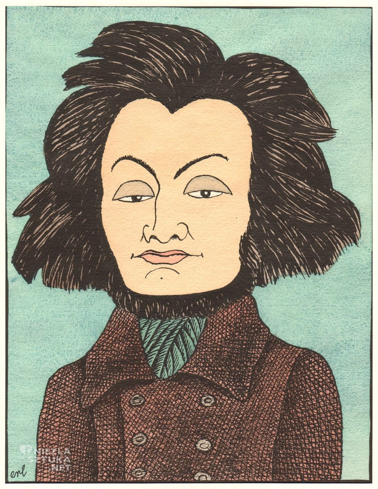
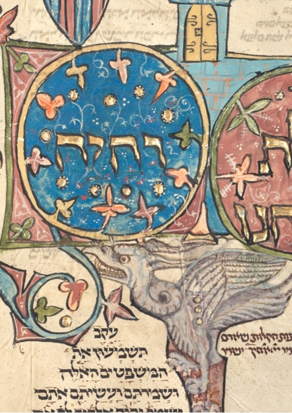

Stepy akermańskie
Adam Mickiewicz

Wpłynąłem na suchego przestwór oceanu,
Wóz nurza się w zieloność i jak łódka brodzi,
Śród fali łąk szumiących, śród kwiatów powodzi,
Omijam koralowe ostrowy burzanu.
Już mrok zapada, nigdzie drogi ni kurhanu;
Patrzę w niebo, gwiazd szukam, przewodniczek łodzi;
Tam z dala błyszczy obłok? tam jutrzenka wschodzi?
To błyszczy Dniestr, to weszła lampa Akermanu.
חָנֵּנִי אֱלֹהִים כְּ

חָנֵּנִי אֱלֹהִים כְּחַסְדֶּךָ; כְּרֹב רַחֲמֶיךָ, מְחֵה פְשָׁעָי.
הֶרֶב, כַּבְּסֵנִי מֵעֲוֺנִי; וּמֵחַטָּאתִי טַהֲרֵנִי.
כִּי-פְשָׁעַי, אֲנִי אֵדָע; וְחַטָּאתִי נֶגְדִּי תָמִיד.
לְךָ לְבַדְּךָ, חָטָאתִי, וְהָרַע בְּעֵינֶיךָ, עָשִׂיתִי: לְמַעַן, תִּצְדַּק בְּדָבְרֶךָ--תִּזְכֶּה בְשָׁפְטֶךָ.